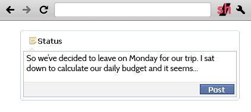
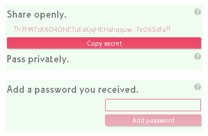
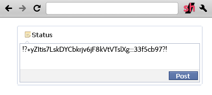
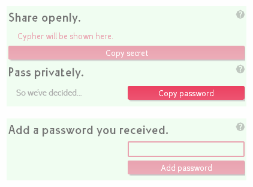
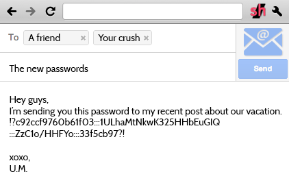
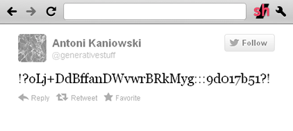
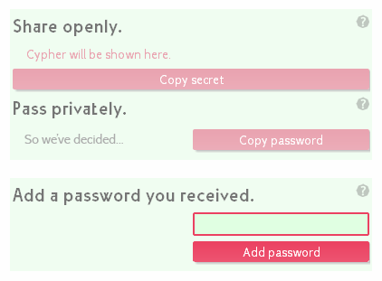
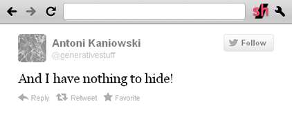

How to create secrets To create a secret, you type in your message as you normally would. You click the box which contains your message and then click the icon. A popup will appear showing a field with the encrypted version of what you wrote. When you click the button you will copy the secret to your clipbaord. The moment you click that button, your password will be saved and remembered on your computer.   
How to share passwords It is advised to share passwords through other channels than the secret - by e-mail for example, or other non-public means. Whenever you want to copy a password to secrte you created, you click the icon. The area titled 'Pass privately' will display snippets of the last five items you encrypted. Clicking the buttons will copy the password to the corresponding secret, which you can then paste and send to whoever you want to read your messages. You are able to copy the last five items, but passwords to an unlimited amount of messages are retained in your browsers memory.  
How to read secrets To decrypt messages to which passwords you already have once entered (or your own), you just need to click the icon. All the encrypted elements on the webpage you are on will be decrypted as long as you have the corresponding password. When you receive passwords from other people, you can paste keys into the 'add a password you received' box and add them by clicking the button. Afterwards you will always be able to decrypt the corresponding secrets.   